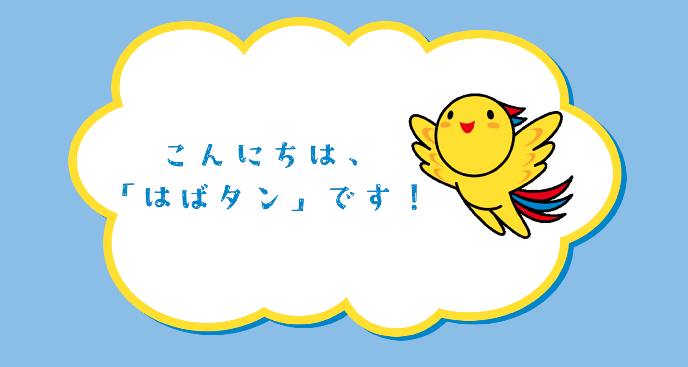

這個網站專為神戶市的可愛吉祥物而設，我們將帶您探索這些獨特角色的故事、活動和趣聞。準備好一窺神戶的可愛一面了嗎？讓我們開始吧！
URL
負責
設計、寫程式
網站目的
推廣神戶的吉祥物，進而促成神戶的觀光與城市探討
目標對象
神戶市民、神戶觀光客
關於這個網站
希望透過吉祥物來宣傳神戶市，讓市民更深入地了解政府的活動，同時促進神戶的觀光業。
提供有關神戶市的重要信息，並鼓勵更多人來探索這個美麗的城市。
使用工具